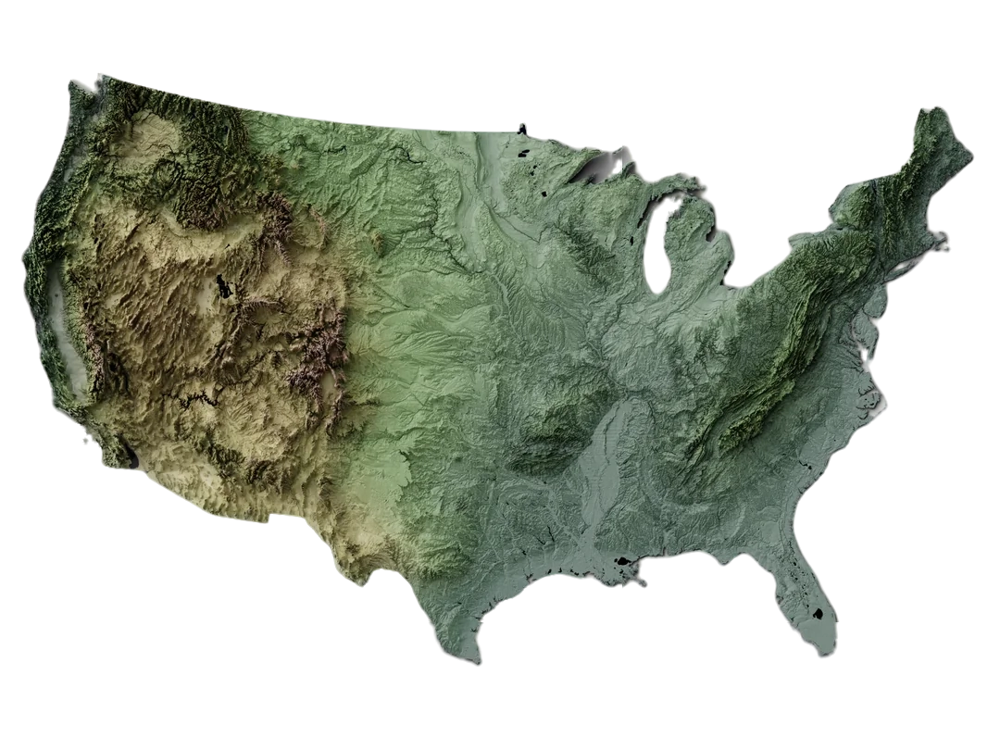

We continue our exploration by looking at the historical data of extreme weather events. This is
essential to understand the situation in the United States. We start by presenting some plots with general
statistics that aim to give you a broad overview of which type of events can happen in the United States,
at which frequency, and with which impact. However, as our dataset is quite extensive, covering many years,
many type of events with details concerning economic loss and number of deaths, we are forced to be selective
on what we show. However, to give you the posisbility to explore more the data by yourself, you have the
possibility, to filter the data by state, range of years, type of events and then choose which information
you want to plot and on which type of plot.
Climate Change in the United States
Temperature Anomaly in the US
To understand how the climate change is affecting the extreme weather events we first
need to understand what is the current climate situation in the United States. For that
we start by showing an historical histogram of the average temperature anomalies for the
whole country campared to the 1961-1990 mean average as this is considered, in the scientific
litterature, as a good baseline for assessing long term changes [ref WMO]. It is obvious
from this histogram that the situation is deteriorating and that all recent years are above the
average.
Temperature Anomaly by State
Some legitimate question that can come to mind when looking at the first histogram is
whether or not the situation is the same over all the country or if some regions, some states
are more spared by the effect of climate change. To asnwer that question we plot the same temperature
anomalies for the year 2024 but for different state of the United States. It is clear that the climate change problem is affecting more intensly some
state. However, none is spared and everyone should be concerned by the problem.
Temperature Anomaly in 2050 in the US
Another question that comes to mind when looking at these different data is to know how it would
be in the future. For that we answer with some strip lines plot showing how the temperature anomaly
is increasing or not depending on different scenarios, typically ranging from concrete actions to mitigate
climate change to none. It is evident that if we want to mitigate climate change some ....
Analysis of Historical Weather Events
We continue our exploration by looking at the historical data of extreme weather events. This is
essential to understand the situation in the United States. We start by presenting some plots with general
statistics that aim to give you a broad overview of which type of events can happen in the United States,
at which frequency, and with which impact. However, as our dataset is quite extensive, covering many years,
many type of events with details concerning economic loss and number of deaths, we are forced to be selective
on what we show. However, to give you the posisbility to explore more the data by yourself, you have the
possibility, to filter the data by state, range of years, type of events and then choose which information
you want to plot and on which type of plot.
Total number of events over the years
We can clearly see a peak in 19.. This is actually due to the fact that more events were
taken into account
Proportional Distribution of Event Types Over Time
This map displays storm event frequency by county, with taller spikes
representing areas experiencing higher numbers of severe weather events.
As we can see, such events are more frequent in the eastern part of the country.
Deadliest type of events
This chart shows how temperatures have changed over time across different regions
of the United States, highlighting the warming trend.
Most costly type of events
Climate models project continued warming across the United States,
with some regions expected to see more dramatic changes than others.
Configure your filters and click "Update Plot" to display weather data visualization
Select States
▼
Weather Events
▼
What to Plot
▼
Year Range
▼
Plot Type
▼
Configure your filters and click "Update Plot" to display weather data visualization
Impact of Climate Change on Events Frequency
As you have maybe found out already above by exploring the data with different kind of plots,
the number of extreme weather events is increasing each year. This results in more crop damage,
deaths and .... This has a huge impact on society in general. To better anticipate future extreme
events and mitigate their impact, a better understanding of the factors facilitating the apparition of
weather events is essential. This is also necessary to assess what are the consequences of the climate
change on the extreme weather freqeuncy. In this part of our exploration we detail other knwon factors
influencing the number and the scale of weather events in the United States before actually trying to
answer scientifically to whether or not climate change has also an impact and in at what scale.

Topographic Map Placeholder
(Image not available)
The role of the geography of the country
This topographic map displays detailed elevation data and terrain features of the selected region.
The contour lines indicate changes in elevation, with closer lines representing steeper terrain
and wider spacing indicating gentler slopes.
Key features visible on this map include mountain peaks, valleys, ridges, and water bodies.
The color gradients and shading help visualize the three-dimensional landscape on a
two-dimensional surface, making it easier to understand the terrain's characteristics.
As you have maybe found out already above by exploring the data with different kind of plots,
the number of extreme weather events is increasing each year. This results in more crop damage,
deaths and .... This has a huge impact on society in general. To better anticipate future extreme
events and mitigate their impact, a better understanding of the factors facilitating the apparition of
weather events is essential. This is also necessary to assess what are the consequences of the climate
change on the extreme weather freqeuncy. In this part of our exploration we detail other knwon factors
influencing the number and the scale of weather events in the United States before actually trying to
answer scientifically to whether or not climate change has also an impact and in at what scale.
"Scientific studies indicate that extreme weather events such as heat waves and large
storms are likely to become more frequent or more intense with human-induced climate
change"
NOAA
The past two decades show a marked increase in storm frequency and intensity,
particularly in tornado activity and severe thunderstorms.
NOAA
The past two decades show a marked increase in storm frequency and intensity,
particularly in tornado activity and severe thunderstorms.
NOAA
The past two decades show a marked increase in storm frequency and intensity,
particularly in tornado activity and severe thunderstorms.
NOAA
Conclusion
As we have seen with these data and visualizations, it is clear that climate change has a role in
the increasing number of events even though it is not the only factors. However, climate change
has other consequences and since it is increasily costly both economicaly and in terms of deaths and
casulties, it is necessary to take quick and impactful actions to both mitigate its consequences as well
as reducing emissions to diminish the future anomalies.
Meet the team
Luc
Master in Data Science
Timo
Master in Life Sciences Engineering with a minor in Data Science